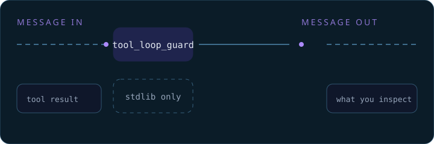

Install
consolepip install tool-loop-guard
Use
pythonfrom tool_loop_guard import LoopDetected, LoopGuard
guard = LoopGuard(max_repeats=3, cycle_length=4)
def call_tool(name, arguments, tool):
decision = guard.observe(name, arguments)
if decision.action == "stop":
return f"Stopped: {decision.reason}. Change your approach or ask the user."
if decision.action == "warn":
return f"{decision.reason}; you are repeating yourself."
return tool(**arguments)
Or let it raise:
pythontry:
guard.check("search", {"q": "python"})
except LoopDetected as error:
error.decision.action, error.decision.reason
# ('stop', 'repeating cycle of 2 calls: read ↔ search')
Wrapping a tool registry, which is the shape a LangGraph or Deep Agents middleware takes:
pythondef wrap(tool, name, guard):
if asyncio.iscoroutinefunction(tool):
async def guarded(**arguments):
decision = guard.observe(name, arguments)
if decision.action == "stop":
return {"error": decision.reason, "action": "stop"}
return await tool(**arguments)
else:
def guarded(**arguments):
decision = guard.observe(name, arguments)
if decision.action == "stop":
return {"error": decision.reason, "action": "stop"}
return tool(**arguments)
return guarded
Why the signature works
signature(name, arguments) is order-insensitive: {"a": 1, "b": 2} and {"b": 2, "a": 1} are the same call, nested dicts are canonicalised, surrounding whitespace in strings is dropped, and strings longer than 200 characters are truncated before hashing — a model that re-emits a 4 000 character file body as an argument is still caught. The name is part of the signature, so write_file and read_file with the same path are different calls.
Rules
| setting | default | meaning |
|---|---|---|
max_repeats | 3 | the count at which an identical call stops the run |
cycle_length | 4 | the longest period looked for in A B A B |
window | 40 | how many recent calls are kept; must be ≥ 2 × cycle_length |
actionis"allow","warn"(one call before the limit) or"stop".- a
Decisionis truthy while allowed, soif not guard.observe(...)also reads well. - the guard is in-memory and cheap; keep one per run and call
reset()between runs.
Limits
- It sees tool calls only. A model that loops inside one long generation is invisible
until it returns, so pair it with a token budget.
- A cycle whose period is longer than
cycle_lengthis not a loop by this definition. - Two different calls that mean the same thing (
read a.txtandread ./a.txt) are
different signatures; normalise the arguments before calling observe if you have aliases like that.
Development
consolepython -m venv .venv
.venv/bin/pip install -e ".[test]"
.venv/bin/pytest
The suite covers every line of the package (pytest --cov --cov-branch), and the examples in the docstrings run as tests through --doctest-modules.
License
MIT.
Other libraries here
One problem each, standard library only, no runtime dependencies.
- argrepair — turn a bad tool call into a message the model can act on
- backoff-headers — turn a rate-limit header into the exact time to wait
- columncheck — find the CSV defect before the pipeline does
- dir-digest — one hash for a directory tree, identical on every OS
- docanchor — catch every broken heading anchor in your docs
- envfile-diff — diff two .env files without printing the secrets
- fsync-replace — replace a file so a crash cannot leave it half-written
- header-date — HTTP dates parsed strictly, formatted correctly
- junit-merge — merge JUnit XML from every job into one honest report
- npm-semver — npm semver ranges, parsed the way npm parses them
- outputcap — keep a huge tool result out of the context window
- parse-size — byte sizes in and out, MB and MiB never confused
- path-containment — keep untrusted paths inside their directory
- redactscope — stop secrets in tool results before they reach the model
- runbudget — a per-run cost cap that warns before it stops
- testflakes — rank your flaky tests from the history you already have
- toolcall-ledger — a hash-chained record of every tool call
- toolcircuit — stop retrying a tool that is down
- toolquota — client-side rate limits your agent loop can wait on
- wheeldeps — read a wheel's dependencies offline, markers included
- zip-deterministic — byte-identical archives, build after build